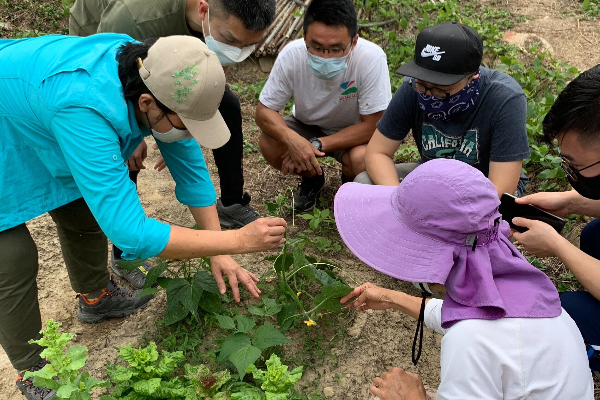

Bachelor of Science in Agriculture
The Bachelor of Science in Agriculture (BSA) program equips students with the knowledge and skills necessary for a successful career in the agricultural sector. The program covers a wide range of subjects including crop production, animal husbandry, agricultural economics, and sustainable farming practices. Students will also gain practical experience through internships, fieldwork, and research projects.
Core Subjects:
- Crop Production and Management
- Soil Science and Fertilization
- Animal Husbandry and Veterinary Science
- Agricultural Economics and Farm Management
- Agroforestry and Sustainable Farming
- Pest and Disease Control
- Agricultural Technology and Innovation
Career Opportunities:
- Agricultural Manager
- Crop Production Specialist
- Animal Health Officer
- Agricultural Economist
- Farm Manager
- Sustainable Agriculture Consultant
Program Highlights:
The BSA program emphasizes hands-on learning with practical training in the field. Students will gain experience in modern agricultural practices, technology, and sustainability while working closely with industry professionals and researchers.
Gallery:

